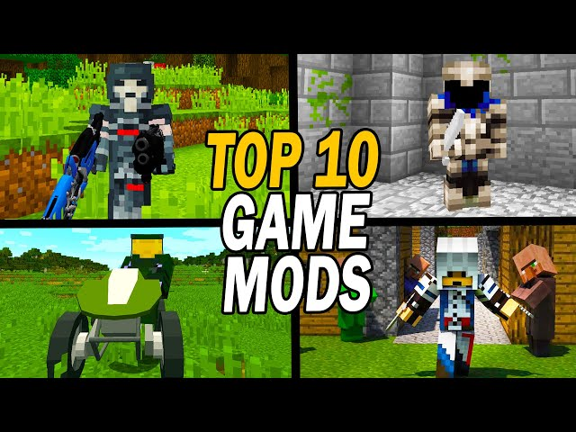
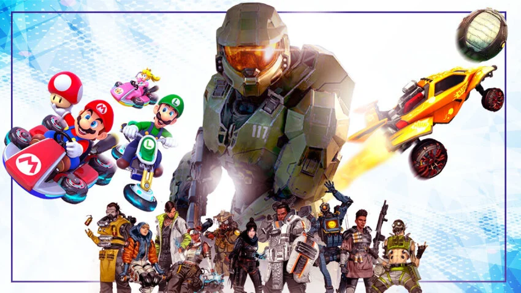

About Me
I am 15 years old and my birthday is on January 3rd. I am in high school right now. I like to write programs and create webpages using HTML and Python.
I am a student from EVHS (Evergreen Valley High School) here in San Jose. I like to write programs and I am very interested in AI. I like to experiment with mods in gaming and trying out AI modules. Some games I play are Minecraft, Doom, Halo: Combat Evolved, and Call of Duty: Black Ops.
What about me and my school?
I am a freshman in this high school and this is one of the many best schools in my country. So far, even if there may be a little competition, I still am a great student there. The school is bigger than my middle school and has some great teachers there. At least my school isn't as too chaotic as my cousin's school (Mission High School). You can at least expect the lunch line to resemble a riot and many disrespectful students in their campus.

What did I do with AI?
For the whole advanced sessions in BYJU's Future School, I have created some web applications using AI and its respective models. Some AI applications I have used include: AI DJ Website, AI Mario Game (shown), and Object Detection.
What mods have I tried?
I like to sometimes mod my games I play and have more of a fun experience with it, such as adding Mojang's April Fool's "update" of The Poisonous Potato mod and playing a heavily modded Wolfenstein 3D game called Kremlin 3D (Instead of raiding the bunker of Germany, you raid the Kremlin of Moscow, Russia due to the events of the Ukranian War).
What games do I play?
There are a ton of games I have played before. Most of them are classical which means they are in 8 bit or 16 bit software in the 80s and 90s. Other modern games that I play include great titles on both the Xbox and PlayStation such as Call of Duty or Halo.